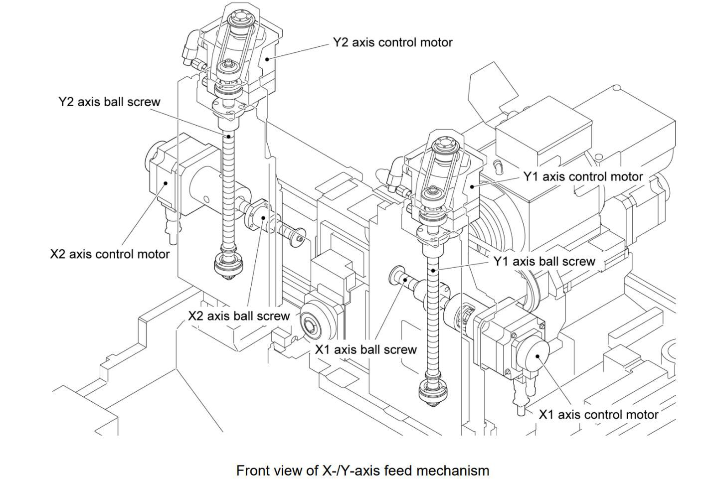
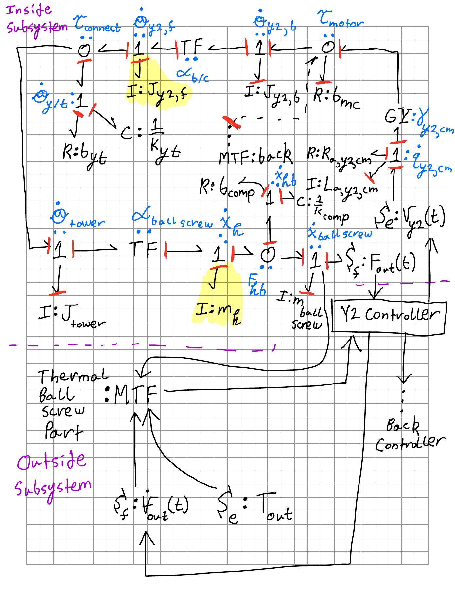
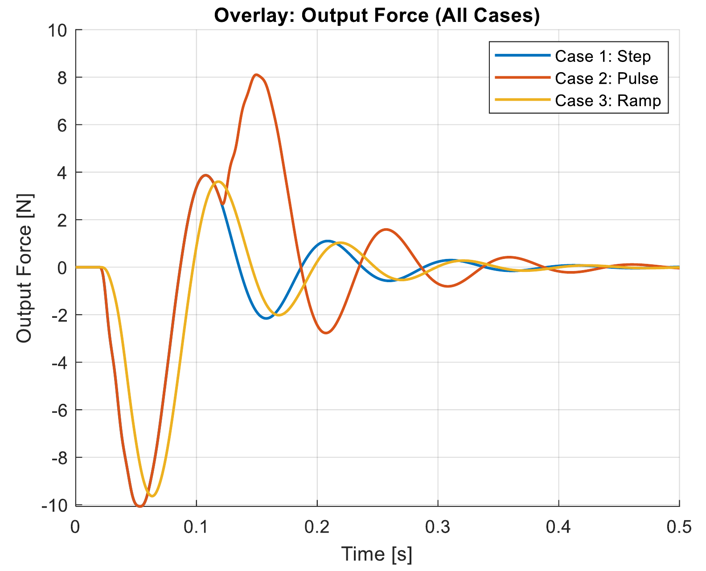

System modeling
CNC drive-system dynamics
Bond-graph modeling across electrical, rotational, and linear mechanical domains.
- Timeline
- Jan — Feb 2026
- Context
- Modeling & simulation
- Tools & methods
Team: Josh McManus, Jacob Cockerill, John Daffron, Raph Okur

Overview
As part of a four-person team in Advanced Modeling and Simulation Techniques, I modeled Gang Tool Post #2 of the Cincom D25 VIII CNC automatic lathe. My contribution covered the subsystem bond graphs, the Y2 drive equations and parameter selection, and a MATLAB study of its transient response.
From hardware to bond graphs
I developed separate models for the X2 rotary-tool device, the Y2 rotary-tool device, and the dual-motor tool-post positioning system. The graphs describe power transfer between electrical and mechanical domains, with inertias, transmission ratios, compliance, and damping represented explicitly.
Implementing the Y2 model
I translated the Y2 subsystem into seven state equations for current, two rotational speeds, torsional deflection, linear velocity, and two displacements. The model includes motor resistance and inductance, a belt transmission, ball-screw kinematics, and a compliant load. I used MATLAB’s ode45 solver to simulate 0.5 seconds from rest.
Comparing input cases
I compared three voltage inputs: a 24 V step beginning at 0.02 seconds, a 24 V pulse lasting 0.10 seconds, and a ramp reaching 24 V over 0.02 seconds. The outputs track current, rotational speed, linear displacement, and force. The step and ramp approach similar rotational speeds; removing the pulse produces a damped transient in the modeled force.
Model scope
The parameter set combines component references with engineering estimates. Only the Y2 subsystem was taken through numerical simulation; the X2 and tool-post positioning systems remain at the bond-graph stage. Thermal and controller interactions are outside the simulated subsystem. The results describe the model’s behavior, not measured performance of the machine.
Project details

Open full-size figure

Open full-size figure